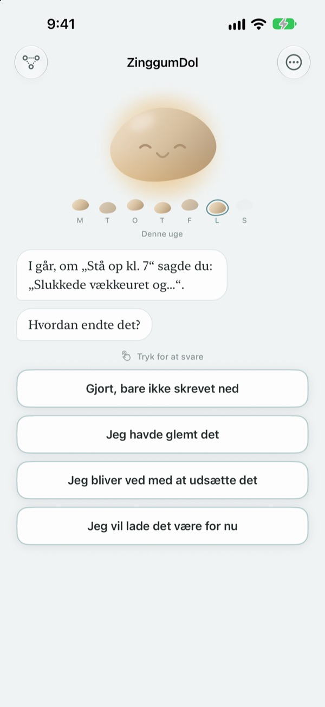
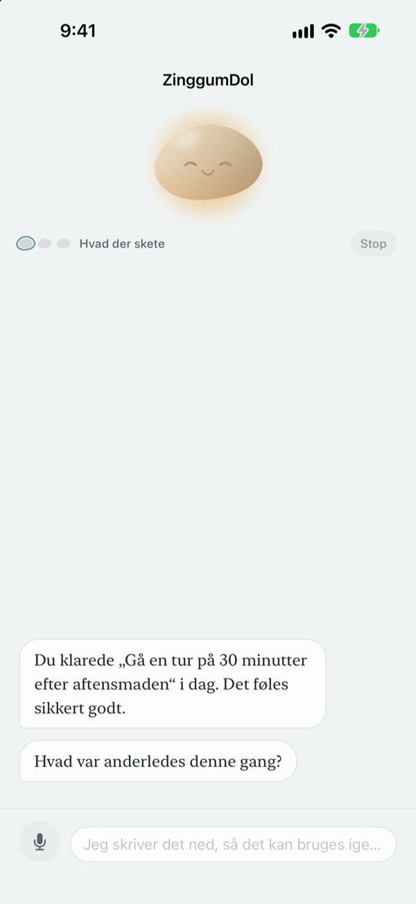
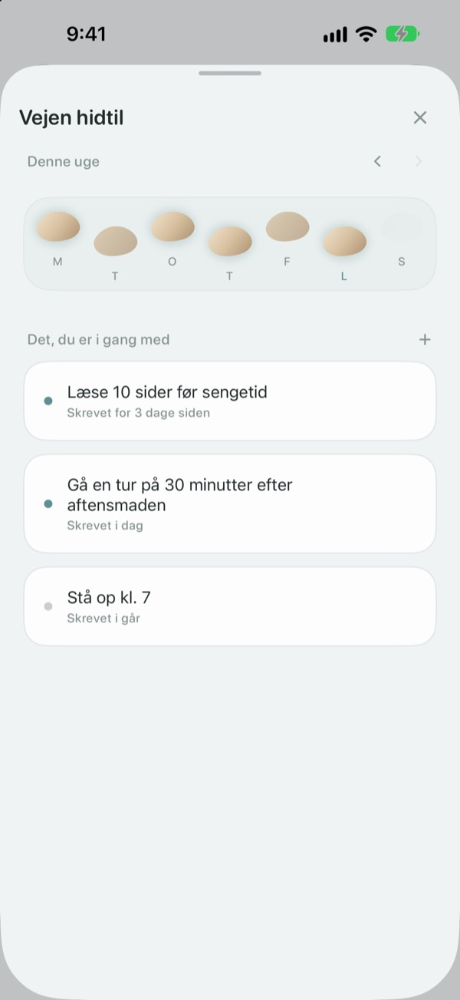
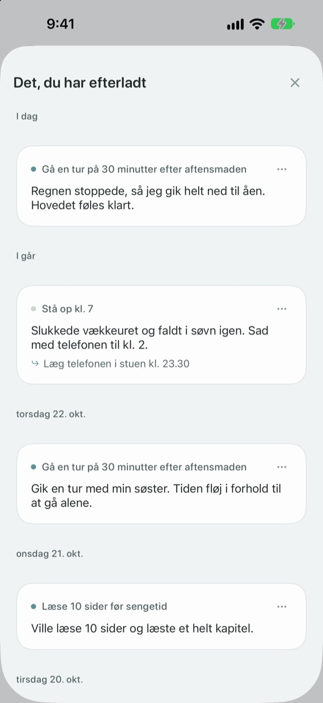

Et fejltrin betyder ikke,
at du er faldet i åen
Den dag du misser dit mål, er det stenen, der taler først. Den spørger, hvad der skete, ikke hvad du gjorde forkert, og giver dig det, der skete, og din følelse tilbage hver for sig.
Samtaler, noter og din vej er gratis. Ingen konto, ingen reklamer.

Tal med stenen
Du ville gå en aftentur i dag, men det blev ikke til noget. Tryk på et svar eller skriv dit eget, så svarer stenen præcis som i appen.
Bebrejder du dig selv, når en dag går skævt?
Den aften du sprang træningen over, er den første tanke ofte ”hvad er der galt med mig?”. Kigger du nærmere, var der overarbejde, det regnede, og du var flad. ZinggumDol spørger i hver sin omgang, hvad der skete, og hvordan du har det, og lægger de to ved siden af hinanden. Når du ser, at det var omstændighederne og ikke din vilje, er det lettere at finde det næste lille skridt.
Stenen taler først
Sæt et mål, så holder stenen øje med de dage, det lykkedes, og de dage, du sad fast. Når en dag smutter, spørger den ”hvad skete der?” i stedet for ”hvorfor ikke?”, og den husker, hvad du fortalte sidst.
På dage hvor det er for meget at skrive, kan du bare sige det højt. Tale genkendes på din enhed, og optagelser gemmes aldrig.

Dine dage som trædesten
Hver uge ligger som en række trædesten. De dage, du ikke trådte på, bliver også liggende; intet slettes.
Selv med et hul eller to kan du se, at vejen fortsætter.

Læs det, du skrev, igen
Hvad der skete, hvordan du havde det, og hvad du vil prøve næste gang, samles efter dato. Læs en dag, hvor du sad fast på samme måde, og se, hvad der hjalp.
En widget viser et ord fra stenen på hjemmeskærmen, og en påmindelse på det tidspunkt, du vælger, inviterer dig til at se tilbage på dagen.

Tre trin, så er du i gang
- 1
Skriv ét mål ned
For eksempel ”Gå en tur på 30 minutter efter aftensmaden”.
- 2
Åbn appen sidst på dagen
Stenen spørger, hvordan dagen gik. Med en påmindelse glemmer du det ikke.
- 3
Tryk eller skriv dit svar
Du kan stoppe når som helst med
Jeg vil lade det være for nu.
Sådan forløber en samtale
- Hvad der skete
- Kun fakta: hvad der kom i vejen
- Følelse
- Hvordan du har det lige nu, på en skala med fem trin
- Se tilbage
- Stenen giver dig det, der skete, og din følelse tilbage hver for sig
- Næste skridt
- Du vælger selv noget lille, fem minutter er nok
- Afslutning
- På en rigtig tung dag spørger den ikke om mere og foreslår en pause
Du kan stoppe når som helst, og det, du har sagt indtil da, bliver gemt.
Samtaler og noter er gratis. Pro, hvis du vil have mere.
Gratis
- Alle samtaler med stenen
- Op til tre mål
- Tal i stedet for at skrive
- Din vej og alt, hvad du har skrevet
- Widget og daglig påmindelse
- Lås med kode
ZinggumDol Pro
- Så mange mål, du vil
- Vælg mellem seks stenoverflader
- Eksportér noter som tekstfil
Køb én gang, og behold det. Intet abonnement.
Der dukker aldrig en betalingsskærm op midt i en samtale. På en ny enhed eller efter geninstallation trykker du på Gendan køb i Indstillinger.
Ofte stillede spørgsmål
Skal jeg forklare hver dag, jeg misser?
Nej. Tryk på Jeg vil lade det være for nu når som helst, så slutter samtalen med det samme. Det, du har sagt, bliver gemt, så du kan fortsætte senere.
Jeg gjorde det, men appen siger, jeg ikke gjorde.
Tryk på Gjort, bare ikke skrevet ned. Stenen tager imod rettelsen og spørger i stedet, hvad der hjalp. Det, der virkede, gemmes og kommer frem igen, næste gang du sidder fast.
Hvor bliver det af, jeg siger højt?
Din tale bliver til tekst på enheden, og optagelsen gemmes aldrig. På understøttede enheder bliver sætningerne også pudset af, så de er lettere at læse, og det sker også på enheden.
Hvor mange mål kan jeg have?
Tre gratis. Når du er færdig med et mål, bruger du Slip under Vejen hidtil for at frigøre en plads. Til flere end tre skal du bruge ZinggumDol Pro.
Er ZinggumDol Pro et abonnement?
Nej. Du betaler én gang og beholder det. På en ny enhed eller efter geninstallation trykker du på Gendan køb i Indstillinger.
Kan andre læse min dagbog?
Der er ingen konto. Dine noter ligger kun på din enhed og i din egen iCloud, og du kan låse appen med en kode i Indstillinger. Det, du skriver, sendes aldrig til udvikleren. Anonym brugsstatistik kan du slå fra i Indstillinger.
Hvordan ændrer jeg tidspunktet for påmindelsen?
Under Daglig påmindelse i Indstillinger slår du den til eller fra og vælger tidspunkt.
Minder stenen mig også om det, der lykkedes?
Ja. Den husker, hvad der hjalp dig, og på en svær dag minder den dig om noget, du for nylig klarede.
Hvordan sletter jeg alt?
Tryk på Slet alle noter i Indstillinger. Dine mål og noter forsvinder for altid, også på andre enheder, der synkroniseres via iCloud. Indstillinger og køb bliver. Med Pro kan du først gemme en kopi med Eksportér noter.
Hvordan kontakter jeg jer?
Via ”Send feedback” i appens Indstillinger, eller skriv til adressen nedenfor.
Spørgsmål eller feedback? Skriv til leeo@kakao.com.